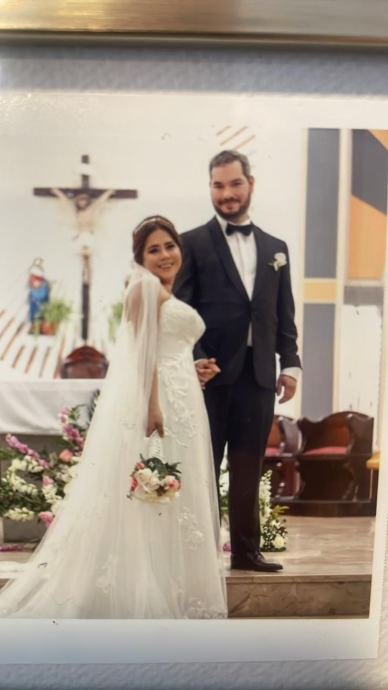

<div class="container">
    
    
    <div class="disc">
        <div class="heart"> </div>
        <div class="message">Jean + Anita</div>
        <audio id="audio" src="chanson.wav"></audio>
    </div>
</div>
<style>
    .container{
        position: relative;
        display: flex;
        justify-content: center;
    }
    img{position: relative;
    }
    .disc{
        display: flex;
        justify-content: center;
        align-items: center;
        background-color: yellow;
        border-radius: 50%;
        position:absolute;
        width: 15rem;
        height: 15rem;
        z-index: 5;
    }
    .heart {
    position: relative;
    width: 100px;
    height: 100px;
    background-color: red;
    transform: rotate(-45deg);
    margin: 50px auto;
  }

  .heart::before,
  .heart::after {
    content: '';
    position: absolute;
    width: 100px;
    height: 100px;
    border-radius: 50%;
    background-color: red;
  }

  .heart::before {
    top: -50px;
    left: 0;
  }

  .heart::after {
    top: 0;
    left: 50px;
  }
  .message{
    position:absolute;
    top: 4.8rem;
  }
</style>

<script>
const disc = document.querySelector('.disc');
let rotation = 0;
let isRotating = false;

disc.addEventListener('click', () => {
    if (!isRotating) {
        isRotating = true;
        rotateDisc();
        const audio = document.getElementById('audio');
        audio.play(); // Déclenche la lecture de l'audio
    } else {
        isRotating = false;
    }
});

function rotateDisc() {
    rotation += 1; // Augmente la rotation par 1 degré à chaque itération
    disc.style.transform = `rotate(${rotation}deg)`; // Applique la nouvelle rotation
    if (isRotating) {
        requestAnimationFrame(rotateDisc); // Appelle la fonction de rotation de manière récursive
    }
}
</script>